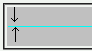

clearプロパティによりフロートの後方へ置かれることを強制したボックスに上ボーダーを設置すると、そのボックスの上部に隙間が空くことがある。
<div style="float:left; width:90%; background:silver; margin:0;">↓</div> <div style="clear:left; background:aqua; border:1px solid silver; margin:0; padding:0;"> <div style="background:silver; margin:0;">↑</div> </div>
「↓」と「↑」の間に隙間はできない（ボーダーや背景色の銀色で塗りつぶされている）はずです。
N7.1での表示（標準モード）
WinIE6.0での表示（標準モード）
clearプロパティを指定する要素に、widthまたはheightプロパティを具体的な値で指定することでこの不具合を回避できます。ただし、親要素にパディングやボーダーが設定されているときにこの方法を採ると隙間が広がってしまうこともあります。以下の例では、親にボーダーとパディングを設定したdiv要素があります。
<div style="float:left; width:90%; background:silver;">↓</div> <div style="clear:left; width:90%; background:aqua; border:1px solid silver;"> <div style="background:silver;">↑</div>
WinIE6.0の標準モードと互換モードで不具合の発生を確認しました。